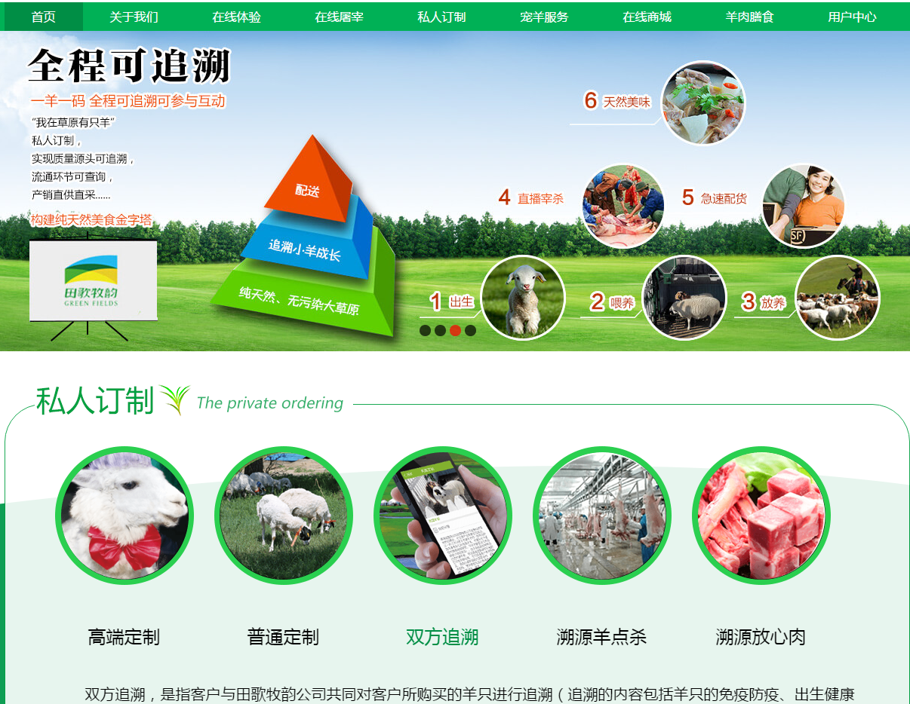

-
- Basic info. 基本信息
- 个人信息: 吴晓栋 / 男 / 26岁
- 教育经历: 本科 / 洛阳师范学院-软件工程专业 / 2012年毕业生
- 英语水平: CET-4
- 常用ID: BluecatWU
- Blog: https://bluecatwu.github.io
- GitHub: https://github.com/BluecatWu
-
- Experience. 项目与工作经验
河南移动网络中心（2012.7 - 2015.2）
-
从事的通信工程
和西门子,诺西,华为,阿尔卡特基站打交道,和WEB前端完全不占边
所以没什么可说的

锡盟胎好生物技术有限公司（2015.3 - 至今）
-
项目一： 上线项目-田歌牧韵 地址
项目描述：草原羊在线体验商城
技术实现：HTML5 CSS3 jQuery AJAX
实现的主要功能：
1. 通过定时器和原生js实现轮播图展示效果。
2. 使用css3实现餐盘转动效果
3. 使用AJAX实现后台数据读取,动态页面切换效果。
4. 使用jQuery实现二级联动菜单的显示和隐藏效果。

个人项目
-
- Skill. 技能清单
Web前端
-
HTML / CSS
能够编写语义化的 HTML，模块化的CSS，完成基本的页面布局
了解 Less / Sass / 等CSS预处理和后处理方法、工具
-
JavaScript
熟悉原生Javascript的编写,能够用DOM做一些小游戏
了解模块化、面向对象的编程方式
了解jQuery BootStrap的使用
-
其他
熟悉 Yeoman Bower Grunt Gulp 前端自动化工具
了解前端安全、性能优化方面的一些知识
后端
-
语言
了解 PHP，能够实现AJAX、异步通信、后台数据读取等基本操作
其他
-
作为一个有趣的人,弹弹吉他还是很有必要的
学习能力强，绝大多数的技能都是自学修得的,这里要感谢慕课网
Git 等开发工具的使用
能够熟练使用 Markdown 进行写作

吴晓栋的简历
"每天前进一小步"
-
- Contact. 联系方式
- 邮箱: BluecatWu@foxmail.com
- 微信/手机: 17603860130
- QQ: 2454296824
-
- Application. 应聘岗位
- 前端码农
-
- Tech. 技能点
JavaScriptHTMLCSSBootstrapjQueryAngularjsPHP
我是一个充满好奇、热爱技术、励志投身互联网的理科男。
我目前正在寻找前端工程师岗位,希望借此机会进入贵公司,贡献自己的绵薄之力！